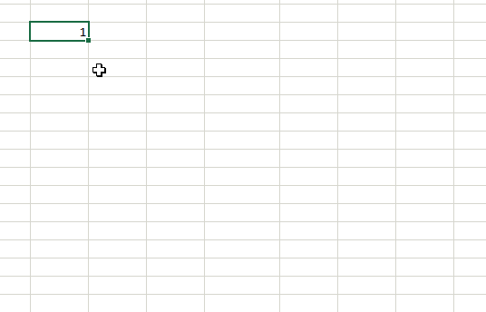

Автозаполнение ячеек в Excel
Автозаполнение ячеек Excel – это автоматический ввод серии данных в некоторый диапазон. Введем в ячейку «Понедельник», затем удерживая левой кнопкой мышки маркер автозаполнения (квадратик в правом нижнем углу), тянем вниз (или в другую сторону). Результатом будет список из дней недели. Можно использовать краткую форму типа Пн, Вт, Ср и т.д. Эксель поймет. Аналогичным образом создается список из названий месяцев.
Автоматическое заполнение ячеек также используют для продления последовательности чисел c заданным шагом (арифметическая прогрессия). Чтобы сделать список нечетных чисел, нужно в двух ячейках указать 1 и 3, затем выделить обе ячейки и протянуть вниз.
Эксель также умеет распознать числа среди текста. Так, легко создать перечень кварталов. Введем в ячейку «1 квартал» и протянем вниз.
На этом познания об автозаполнении у большинства пользователей Эксель заканчиваются. Но это далеко не все, и далее будут рассмотрены другие эффективные и интересные приемы.
Автозаполнение в Excel из списка данных
Ясно, что кроме дней недели и месяцев могут понадобиться другие списки. Допустим, часто приходится вводить перечень городов, где находятся сервисные центры компании: Минск, Гомель, Брест, Гродно, Витебск, Могилев, Киев, Харьков, Одесса, Москва, Санкт-Петербург, Воронеж, Ростов-на-Дону, Смоленск, Белгород. Вначале нужно создать и сохранить (в нужном порядке) полный список названий. Заходим в Файл – Параметры – Дополнительно – Общие – Изменить списки.
В следующем открывшемся окне видны те списки, которые существуют по умолчанию.
Как видно, их не много. Но легко добавить свой собственный. Можно воспользоваться окном справа, где либо через запятую, либо столбцом перечислить нужную последовательность. Однако быстрее будет импортировать, особенно, если данных много. Для этого предварительно где-нибудь на листе Excel создаем перечень названий, затем делаем на него ссылку и нажимаем Импорт.
Жмем ОК. Список создан, можно изпользовать для автозаполнения.
Помимо текстовых списков чаще приходится создавать последовательности чисел и дат. Один из вариантов был рассмотрен в начале статьи, но это примитивно. Есть более интересные приемы. Вначале нужно выделить одно или несколько первых значений серии, а также диапазон (вправо или вниз), куда будет продлена последовательность значений. Далее вызываем диалоговое окно прогрессии: Главная – Заполнить – Прогрессия.
Рассмотрим настройки.
В левой части окна с помощью переключателя задается направление построения последовательности: вниз (по строкам) или вправо (по столбцам).
Посередине выбирается нужный тип:
- арифметическая прогрессия – каждое последующее значение изменяется на число, указанное в поле Шаг
- геометрическая прогрессия – каждое последующее значение умножается на число, указанное в поле Шаг
- даты – создает последовательность дат. При выборе этого типа активируются переключатели правее, где можно выбрать тип единицы измерения. Есть 4 варианта:
- день – перечень календарных дат (с указанным ниже шагом)
- рабочий день – последовательность рабочих дней (пропускаются выходные)
- месяц – меняются только месяцы (число фиксируется, как в первой ячейке)
- год – меняются только годы
- автозаполнение – эта команда равносильная протягиванию с помощью левой кнопки мыши. То есть эксель сам определяет: то ли ему продолжить последовательность чисел, то ли продлить список. Если предварительно заполнить две ячейки значениями 2 и 4, то в других выделенных ячейках появится 6, 8 и т.д. Если предварительно заполнить больше ячеек, то Excel рассчитает приближение методом линейной регрессии, т.е. прогноз по прямой линии тренда (интереснейшая функция – подробнее см. ниже).
Нижняя часть окна Прогрессия служит для того, чтобы создать последовательность любой длины на основании конечного значения и шага. Например, нужно заполнить столбец последовательностью четных чисел от 2 до 1000. Мышкой протягивать не удобно. Поэтому предварительно нужно выделить только ячейку с одним первым значением. Далее в окне Прогрессия указываем Расположение, Шаг и Предельное значение.
Результатом будет заполненный столбец от 2 до 1000. Аналогичным образом можно сделать последовательность рабочих дней на год вперед (предельным значением нужно указать последнюю дату, например 31.12.2016). Возможность заполнять столбец (или строку) с указанием последнего значения очень полезная штука, т.к. избавляет от кучи лишних действий во время протягивания. На этом настройки автозаполнения заканчиваются. Идем далее.
Автозаполнение чисел с помощью мыши
Автозаполнение в Excel удобнее делать мышкой, у которой есть правая и левая кнопка. Понадобятся обе.
Допустим, нужно сделать порядковые номера чисел, начиная с 1. Обычно заполняют две ячейки числами 1 и 2, а далее левой кнопкой мыши протягивают арифметическую прогрессию. Можно сделать по-другому. Заполняем только одну ячейку с 1. Протягиваем ее и получим столбец с единицами. Далее открываем квадратик, который появляется сразу после протягивания в правом нижнем углу и выбираем Заполнить.
Если выбрать Заполнить только форматы, будут продлены только форматы ячеек. Сделать последовательность чисел можно еще быстрее. Во время протягивания ячейки, удерживаем кнопку Ctrl .
Этот трюк работает только с последовательностью чисел. В других ситуациях удерживание Ctrl приводит к копированию данных вместо автозаполнения.
Если при протягивании использовать правую кнопку мыши, то контекстное меню открывается сразу после отпускания кнопки.
При этом добавляются несколько команд. Прогрессия позволяет использовать дополнительные операции автозаполнения (настройки см. выше). Правда, диапазон получается выделенным и длина последовательности будет ограничена последней ячейкой.
Чтобы произвести автозаполнение до необходимого предельного значения (числа или даты), можно проделать следующий трюк. Берем правой кнопкой мыши за маркер чуть оттягиваем вниз, сразу возвращаем назад и отпускаем кнопку – открывается контекстное меню автозаполнения. Выбираем прогрессию. На этот раз выделена только одна ячейка, поэтому указываем направление, шаг, предельное значение и создаем нужную последовательность.
Очень интересными являются пункты меню Линейное и Экспоненциальное приближение. Это экстраполяция, т.е. прогнозирование, данных по указанной модели (линейной или экспоненциальной). Обычно для прогноза используют специальные функции Excel или предварительно рассчитывают уравнение тренда (регрессии), в которое подставляют значения независимой переменной для будущих периодов и таким образом рассчитывают прогнозное значение. Делается примерно так. Допустим, есть динамика показателя с равномерным ростом.
Для прогнозирования подойдет линейный тренд. Расчет параметров уравнения можно осуществить с помощью функций Excel, но часто для наглядности используют диаграмму с настройками отображения линии тренда, уравнения и прогнозных значений.
Чтобы получить прогноз в числовом выражении, нужно произвести расчет на основе полученного уравнения регрессии (либо напрямую обратиться к формулам Excel). Таким образом, получается довольно много действий, требующих при этом хорошего понимания.
Так вот прогноз по методу линейной регрессии можно сделать вообще без формул и без графиков, используя только автозаполнение ячеек в экселе. Для этого выделяем данные, по которым строится прогноз, протягиваем правой кнопкой мыши на нужное количество ячеек, соответствующее длине прогноза, и выбираем Линейное приближение. Получаем прогноз. Без шума, пыли, формул и диаграмм.
Более быстрого способа прогнозирования, пожалуй, не придумаешь.
Автозаполнение дат с помощью мыши
Довольно часто требуется продлить список дат. Берем дату и тащим левой кнопкой мыши. Открываем квадратик и выбираем способ заполнения.
По рабочим дням – отличный вариант для бухгалтеров, HR и других специалистов, кто имеет дело с составлением различных планов. А вот другой пример. Допустим, платежи по графику наступают 15-го числа и в последний день каждого месяца. Укажем первые две даты, протянем вниз и заполним по месяцам (любой кнопкой мыши).
Обратите внимание, что 15-е число фиксируется, а последний день месяца меняется, чтобы всегда оставаться последним.
Используя правую кнопку мыши, можно воспользоваться настройками прогрессии. Например, сделать список рабочих дней до конца года. В перечне команд через правую кнопку есть еще Мгновенное заполнение. Эта функция появилась в Excel 2013. Используется для заполнения ячеек по образцу.